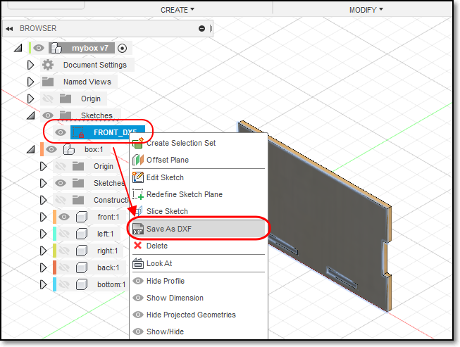
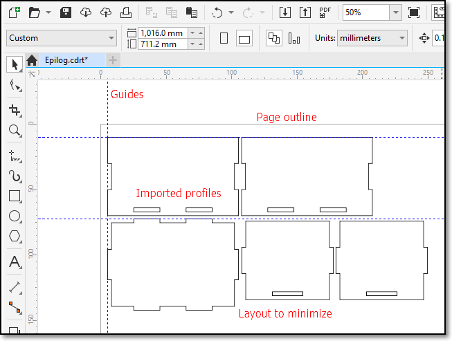

Laser Cutting (4 June)
Laser cutting is a process where material is placed in the X-Y plane and a LASER (Light Amplification by Stimulated Emission of Radiation) is moved across the profile to be cut out. It can be focused to a tight spot, which allows the beam to "cut" at the position.
The high intensity of the beam causes the material to be vaporised (cut away).Since the light can be focused, a very thin cut is made. Electronics and machine control make the cut precise and repeatable.The laser can be programmed to have a continous wave or pulsed repeatedly to produce the cut.
The process of laser cutting is controlled by:
- The speed of the movement of the laser
- Slow speeds allow the laser more time over the material and cuts deeper and more intensely. It also causes charring of material.
- The intensity of the laser
- Higher intensities of the laser can cut deeper and are sometimes required as the material is more dense than others.
- The number of pulses per second
- Most lasers are pulsed. The higher the number of pulses per second give higher intensities and prolonged exposure to the laser.
- Higher pulsing reates are required for dense material.
- Most lasers settings come with recommendations from the manufacturer or the Technicians and are dependent upon:
- The material (e.g. wood, acrylic, paper)
- The thickness of the material
- The color/coloration of the material
Preparing Fusion 360 Models
When designing in Fusion 360, we have the ability to model an object in 3 dimensions, check for joints and obstructions and aesthetics of the model. However, when we decide to laser cut the object we need to obtain the profile of the object and export it in a format that the cutting software recognises. This applies to other design software as well e.g. Illustrator, Rhino.
The preferred file formats required for laser cutting are:
We will be using CorelDraw Graphics suite to check and finalise the cuts, which is able to handle both Vector and Raster images suitable for cutting and engraving. This is traditionally the recommended software though it is fast being replaced by Inkscape, RDWorks (for China Lasers) because of its costs.You can also use Open Source software to import, check and layout your DXF files before doing a final import to CorelDraw such as LibreCAD.
Obtaining DXF Profiles
To create a 2D DXF file, you first have to select on the body you want to extract the profile. You then have to make a create a new sketch (Create > Create Sketch). It is IMPORTANT to click on the profile again until it turns blue before clicking on Finish Sketch.

Your sketch should now be located in the Object Browser > Sketches. Rename it accordingly (e.g FRONT.DXF). Once that is done, right click the sketch that you just renamed and click on Save As DXF.
- Finally, you just have to repeat the same process for all the other bodies. You do not have to do it for mirrored bodies as, obviously, it is mirrored therefore doing it for the original body will do.
Click to enlarge
{kind=link}
Click to enlarge
Checking and Preparing of Work
It is important to check your DXF files before coming down to the laser cutter to cut your work. This is because
- Sometimes the profiles are not exported correctly
- You will need time to layout your profiles to save space on the material to be cut
- Laser cutter time is expensive (approx $70/hr). You don’t want to spend that time correcting your layout or finding out that your profiles have errors.
The software used on most Laser cutters is CorelDraw (which is a licensed product) that comes as the default. However, CorelDraw accepts a large number of Vector/Raster formats which allow you to import. The more common formats are
- AutoCAD DXF (from most CAD software systems)
- PDF (Adobe Illustrator)
- SVG
You can use the following Open Source software to import, check and layout your DXF files before doing a final import to CorelDraw:
Below are steps as to how to use both LibreCAD and Inkscape to import your DXF files for checking and layout.
LibreCAD
Inkscape
{kind=link}
LibreCAD is an open source CAD drawing program. You can use it to create 2D profiles and save it to DXF files. It’s default file format is .DXF. To import your files, you first have to open a new drawing by clicking on File > New. Next, to import your files, click on File > Import > Block and select your .DXF files. Keep adding the profiles. You can layout your laser cut profile using this software. Any lines/graphics drawn will be cut out by the laser cutter. Once that is done, check your profiles and save your work as another DXF file which would be needed to be imported to CorelDraw later.
To import your files on inkscape, you first select a file size that you can work on (e.g. A4 or A3) by clicking on File > Document Properties. Then, click on File > Import to select your DXF file. Choose Manual Scale when importing the file. Then manually layout the imported item on the page and repeat for all your other files. Check your work and then export it as DXF, PDF or SVG format, to be sent to CorelDraw.
CorelDraw
Transfer your DXF layout to CorelDraw as follows:

- Create a new CorelDraw file (the default template of 40x28 inch or 1017x711 mm, the size of the laser cutter, is available).
- File > Import > "Select DXF file"
- In the “Import AutoCAD File” popup. ensure that the units are Metric and the Scaling is 1:1
- Place the layout on the drawing.
You can also import SVG, DXF and other file formats.

{kind=link}
- Profiles are laid out to minimize material waste.
- You can also arrange your profiles to speed up the cutting process
- Check that the profiles are correct before cutting
- To cut, click “Print”
Kerf
When a laser cuts through material, some material is removed in the process. The material that is removed is called the Kerf (a slit or notch made by a saw or cutting torch).
- The kerf in laser cutters is very small (approx. 0.3 ~ 0.8 mm) depending on the material and how it is cut.
- If we can calculate the Kerf (through experimentation) we can make adjustments to ensure that the cuts are press-fit.
- Adjusments are usually made by
- decreasing the size of the “holes”
- increasing the size of the “tabs”
- Can be done parametrically by adding an adjustment value to compensate for the kerf.

- Kerf is the material removed when lasercutting.
- Assume a profile 20x20mm is cut.
- After cutting the cut piece is measured (still 20x20mm) and the hole is measured (20.8x20.8mm).
- The hole is larger because material has to be removed in the cut. The amount of material removed is called the Kerf.
- In this case, Kerf = (20.8 - 20)/2 = 0.4mm
- Hence to make tight joints, you have to compensate for this kerf.